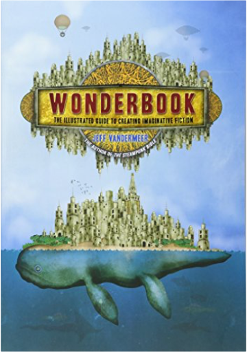
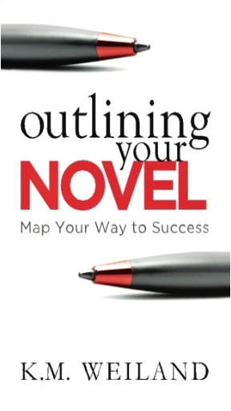
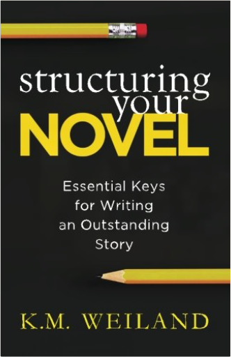
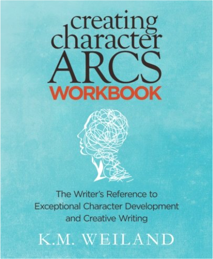
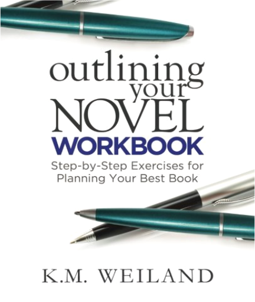
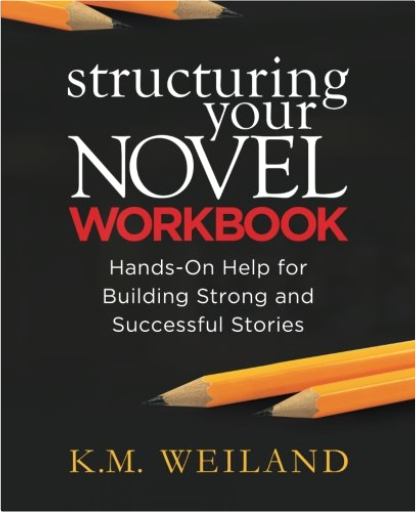

In a school where martial arts are standard curriculum, it takes more than great grades to rise to the top of the class. As rival students at Daimon High throw down their best moves in all-out K-Fight battle, the action in the ring heats up more than ever. Samurai Girl Ryoko is set on breaking bones as a Samurai Nurse, but there are plenty of challengers ready to knock her out for good! And with teachers entering the ring to duke it out, all bets are off. Who has time for homework when there’s a battle to catch?  Following the success of Manga Matrix, which demonstrated how to create manga characters, Super Manga Matrix by Hiroyoshi Tsukamoto will help aspiring artists and professionals create awesome manga characters and manga stories! Using a unique matrix system invented in Japan, artists of all skill levels—from beginner to advanced—can create new types of heroes, evil creatures, and multi-formed beasts, as well as plot their stories on a matrix diagram. Perfect for lovers of the enormously popular manga, Super Manga Matrix is a simple, yet innovative, way to for anyone to easily create manga!  Wonderbook: The Illustrated Guide to Creating Imaginative FictionJeff VanderMeer This all-new definitive guide to writing imaginative fiction takes a completely novel approach and fully exploits the visual nature of fantasy through original drawings, maps, renderings, and exercises to create a spectacularly beautiful and inspiring object. Employing an accessible, example-rich approach, Wonderbook energizes and motivates while also providing practical, nuts-and-bolts information needed to improve as a writer. Aimed at aspiring and intermediate-level writers, Wonderbook includes helpful sidebars and essays from some of the biggest names in fantasy today, such as George R. R. Martin, Lev Grossman, Neil Gaiman, Michael Moorcock, Catherynne M. Valente, and Karen Joy Fowler, to name a few.  Yuri Monogatari (Lily Tales) is an annual collection of lesbian-themed Japanese-style comic Yuri manga stories from the world's only all-Yuri publisher, ALC Publishing. These tales about lesbian life and love by artists and writers from around the world, include popular Japanese Yuri manga artists Rica Takashima, UKOZ, Eriko Tadeno and award-nominated lesbian novelist J.D. Glass.  Yuri Monogatari ("Lily Tales") is an annual collection of lesbian-themed Japanese-style comic stories (yuri manga). These tales about lesbian life and love come from artists and writers from around the world, including popular Japanese yuri manga artists Akiko Morishima and Rica Takashima and four-time contributors Althea Keaton, Beth Malone and Kristina Kolhi.  Filled with stories of irresolvable love to wild fantasy, comedy, real-life adventures, and harsh, but sensual realism, Yuri Monogatari (Lily Tales) features expressions of lesbian life and love in a way that everyone can enjoy. This annual collection of lesbian-themed, Japanese-style comic ("yuri manga") tales showcases artists and writers from around the world, including Japan, Europe, and America.  An essential, fully illustrated guidebook to day-to-day Goth living |  Copied out by hand as a young man aspiring to the status of Gentleman, George Washington's 110 rules were based on a set of rules composed by French Jesuits in 1595. The first English edition of these rules was available in Francis Hawkins' Youths Behavior, or Decency in Conversation Amongst Men, which appeared in 1640, and it is from work that Washington seems to have copied. The rules as Washington wrote them out are a simplified version of this text. However much he may have simplified them, these precepts had a strong influence on Washington, who aimed to always live by them. The rules focus on self-respect and respect for others through details of etiquette. The rules offer pointers on such issues as how to dress, walk, eat in public, and address one's superiors.  Outlining Your Novel: Map Your Way to SuccessK. M. Weiland Acclaim for Outlining Your Novel: Map Your Way to Success  Structuring Your Novel: Essential Keys for Writing an Outstanding StoryK. M. Weiland Acclaim for Structuring Your Novel  Creating Character Arcs Workbook: The Writer's Reference to Exceptional Character Development and Creative WritingK.M. Weiland Uncover the Secrets to Creating Characters Readers Will Never Forget  Powerful Character Arcs Create Powerful Stories Have you written a story with an exciting concept and interesting characters—but it just isn’t grabbing the attention of readers or agents? It’s time to look deeper into the story beats that create realistic and compelling character arcs. Internationally published, award-winning novelist K.M. Weiland shares her acclaimed method for achieving memorable and moving character arcs in every book you write. By applying the foundation of the Three-Act Story Structure and then delving even deeper into the psychology of realistic and dynamic human change, Weiland offers a beat-by-beat checklist of character arc guidelines that flexes to fit any type of story. This comprehensive book will teach you:How to determine which arc—positive, negative, or flat—is right for your character.Why you should NEVER pit plot against character. Instead, learn how to blend story structure and character development.How to recognize and avoid the worst pitfalls of writing novels without character arcs.How to hack the secret to using overarching character arcs to create amazing trilogies and series.And much more!Gaining an understanding of how to write character arcs is a game-changing moment in any author’s pursuit of the craft. Bring your characters to unforgettable and realistic life—and take your stories from good to great!  Outlining Your Novel Workbook: Step-by-Step Exercises for Planning Your Best BookK.M. Weiland Learn How to Make Your First Draft Easy! Award-winning author K.M. Weiland’s previous book, the bestselling Outlining Your Novel, showed writers how to embrace outlines in a way that makes the writing process fun, inspiring, and easy. Now it’s time to put those lessons to use! Building upon the principles you’ve already learned, the Outlining Your Novel Workbook presents a guided approach to getting the bones of your story down on paper, identifying plot holes, and brainstorming exciting new possibilities. Containing hundreds of incisive questions and imagination-revving exercises, this valuable resource will show you how to:Create your own personalized outlining processBrainstorm premise and plot ideasDiscover your charactersChoose and create the right settingsOrganize your scenesAnd so much more!This accessible and streamlined workbook will empower you to create a powerful outline—and an outstanding novel. Start writing your best book today!  Structuring Your Novel Workbook: Hands-On Help for Building Strong and Successful StoriesK.M. Weiland Discover the Proven Blueprint for Creating Stories That Sell! Award-winning author K.M. Weiland’s previous book, the award-winning Structuring Your Novel, showed writers how to create stories with strong and compelling plot structure. Now it’s time to put those lessons to use! Building upon the principles you’ve already learned, the Structuring Your Novel Workbook presents a guided approach to writing solid first drafts, identifying and fixing plot problems, and writing consistently good stories. Containing hundreds of incisive questions and imagination-revving exercises, this valuable resource will show you how to:Implement a strong three-act structureTime your acts and your plot pointsUnleash your unique and personal vision for your storyIdentify common structural weaknesses and flip them around into stunning strengthsEliminate saggy middles by discovering your story’s “centerpiece”And so much more!This accessible and streamlined workbook will empower you to create a powerful structure—and an outstanding novel. Start writing your best book today! |

Github Pages
Collection Total:
267 Items
267 Items
Last Updated:
Jul 14, 2018
Jul 14, 2018
 Made with Delicious Library
Made with Delicious Library